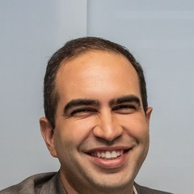
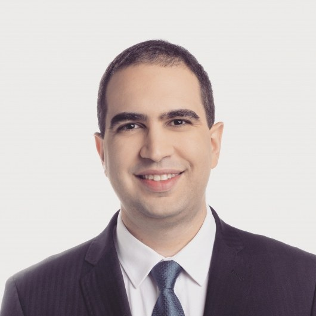
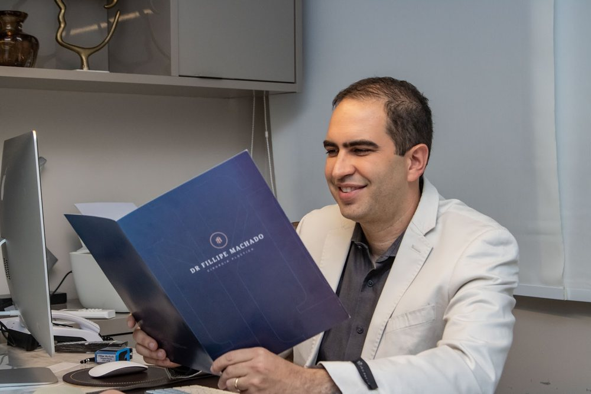

Início · Sobre
Fillipe Almeida Machado, cirurgião plástico.
Título de especialista em Cirurgia Plástica (SBCP, 2018), registro CRM-BA 22688 · RQE 15540, cirurgião plástico do hospital universitário da UFBA. Cada informação desta página tem a fonte ao lado.

Com as datas do CNES
Percurso
- 2012Residência médica
Médico residente no Hospital Geral do Estado (04/2012–03/2018) e no Hospital Santo Antônio (05/2012–11/2017).
CNES - 2016IMIP, Recife
Vínculo como cirurgião plástico no Instituto de Medicina Integral Prof. Fernando Figueira (11/2016–01/2018).
CNES - 2018Título de especialista
Aprovado no exame da Sociedade Brasileira de Cirurgia Plástica de março de 2018.
Lista oficial da SBCP - 2018Hospital Geral do Estado
Cirurgião plástico do HGE, em Salvador (04/2018–10/2023).
CNES - HojeHUPES · UFBA
Cirurgião plástico do hospital universitário da UFBA desde 03/2023, e docente listado em Cirurgia Plástica Reparadora.
CNES · SUPAC/UFBA
Sociedade de especialidade
Título de especialista em Cirurgia Plástica

O nome Fillipe Almeida Machado está na relação oficial de aprovados no Exame de Suficiência para Obtenção do Título de Especialista de março de 2018. Na ficha do Google, ele assina “Cirurgião Plástico CRM-BA: 22688 | RQE: 15540”.
Ver a lista oficial da SBCPHoje
HUPES e UFBA
- Cirurgião plástico do Hospital Universitário Professor Edgard Santos (HUPES/UFBA), desde 03/2023 (CNES).
- Docente listado em MED132 – Cirurgia Plástica Reparadora, na Faculdade de Medicina da Bahia (quadro 2022-2 da SUPAC).
- Consultório em Salvador (Candeal) e atendimento em Feira de Santana — veja onde atendo.

Nas palavras dele
Uma profissão que reflete valores
“Nem sempre é possível equilibrar tudo, mas tenho a sorte de exercer uma profissão que reflete os valores em que acredito e a forma como escolho viver.”Dr. Fillipe Machado, publicação na ficha do Google, 16/09/2026 · ver a ficha
“Saber que você escolheu realizar mais de um procedimento comigo e que se sentiu segura e bem cuidada em todas as etapas é muito especial. Agradeço também pelo reconhecimento ao trabalho da minha equipe.”Dr. Fillipe Machado, resposta a uma avaliação no Google · ver a ficha
Transparência
Como conferir
- Título de especialista (2018): lista oficial de aprovados da SBCP.
- Registro médico: busca de médicos do CFM.
- Residência e vínculos hospitalares: consulta de profissionais do CNES.
- Docência em Cirurgia Plástica Reparadora: quadro de horários da UFBA.
- Avaliações e horário do consultório: ficha do Google.
Dúvidas frequentes
Perguntas comuns
Qual é o registro do Dr. Fillipe?
CRM-BA 22688 · RQE 15540, em Cirurgia Plástica.
Onde ele fez a residência?
O CNES registra o Dr. Fillipe como médico residente no Hospital Geral do Estado (2012–2018) e no Hospital Santo Antônio (2012–2017), em Salvador.
Ele dá aulas na UFBA?
O quadro de horários 2022-2 da Faculdade de Medicina da Bahia lista o nome dele entre os docentes de Cirurgia Plástica Reparadora (MED132).
Agende
A primeira conversa é a consulta.
Atendimento com hora marcada em Salvador (Empresarial Cidade Jardim, Candeal) e em Feira de Santana. Escolha a cidade e combine dia e horário pelo WhatsApp (71) 99920-2603.